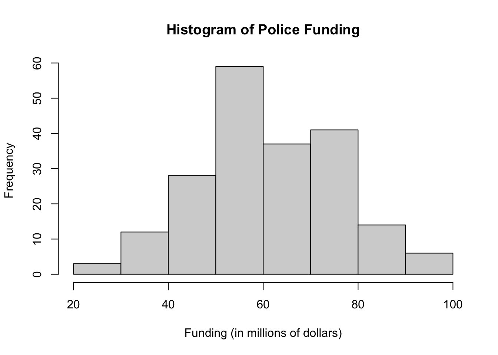
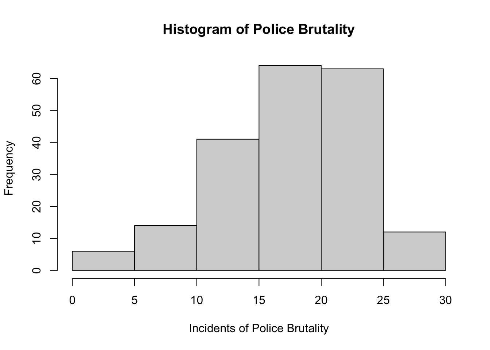
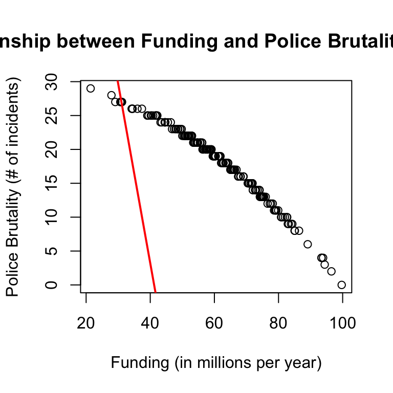
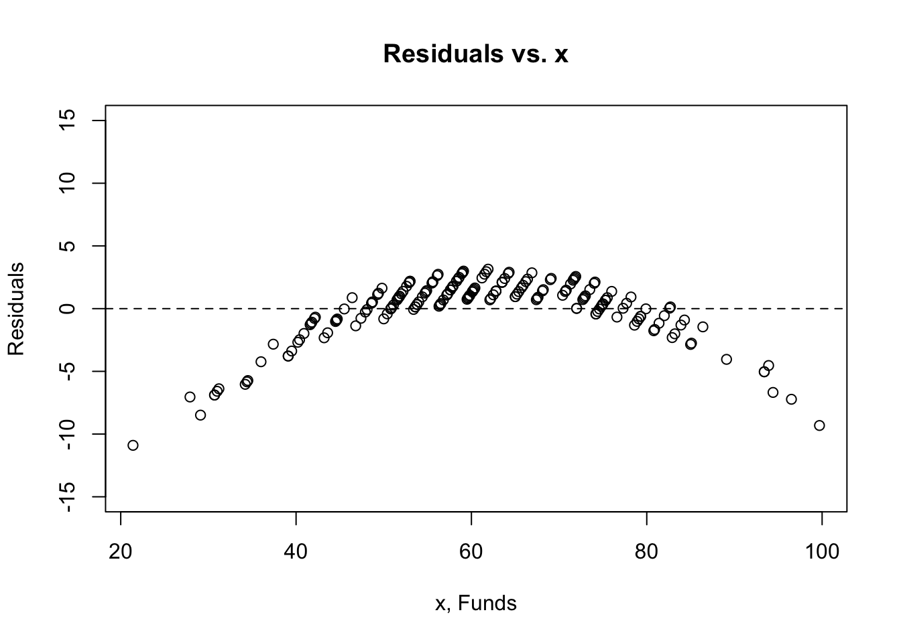
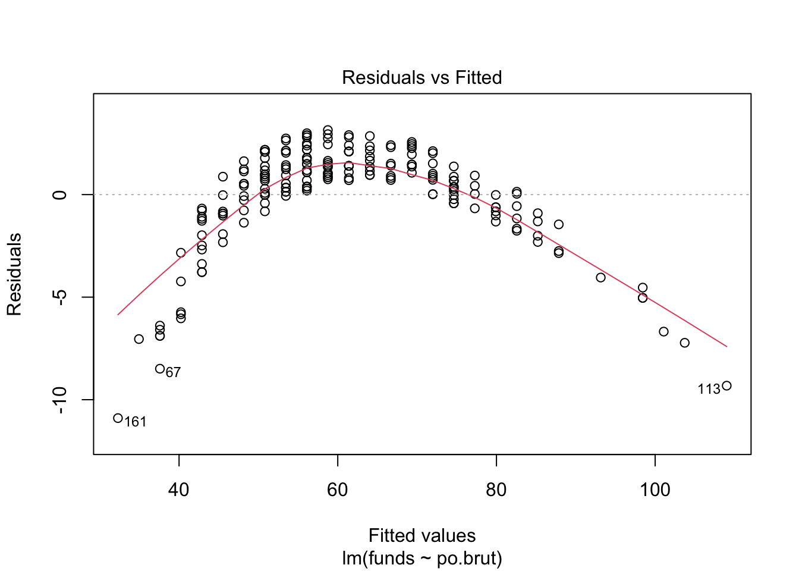
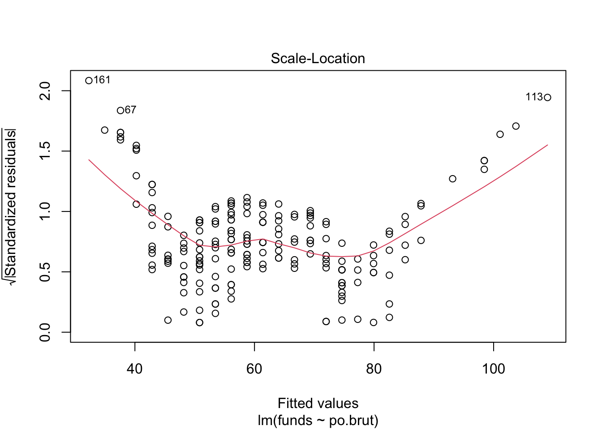
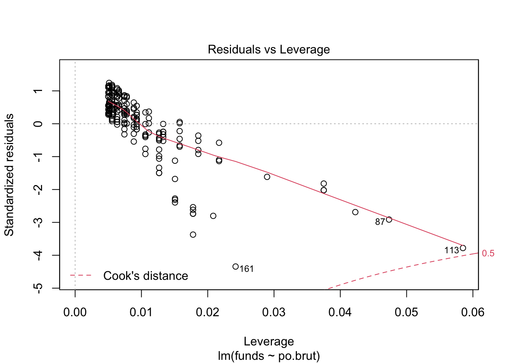
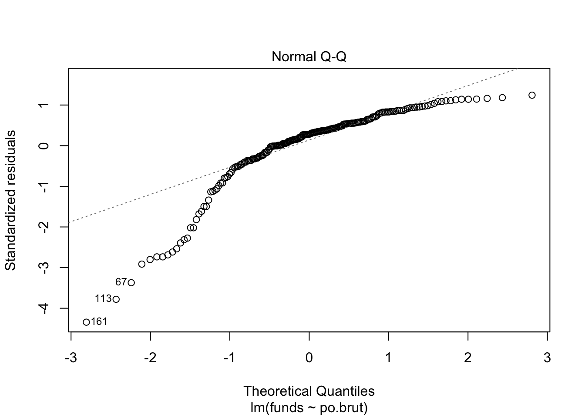

Create a folder in your computer (a good place would be under Crim 250, Exams).
Download the dataset from the Canvas website (sim.data.csv) onto that folder, and save your Exam 2.Rmd file in the same folder.
Data description: This dataset provides (simulated) data about 200 police departments in one year. It contains information about the funding received by the department as well as incidents of police brutality. Suppose this dataset (sim.data.csv) was collected by researchers to answer this question: “Does having more funding in a police department lead to fewer incidents of police brutality?”
Codebook:
Describe the dataset and variables. Perform exploratory data analysis for the two variables of interest: funds and po.brut.
dat5 <- read.csv(file = 'sim.data.csv')
hist(dat5$funds, main="Histogram of Police Funding", xlab="Funding (in millions of dollars)", ylab="Frequency")
hist(dat5$po.brut, main="Histogram of Police Brutality", xlab="Incidents of Police Brutality", ylab="Frequency")
table(dat5$funds)##
## 21.4 27.9 29.1 30.7 31 31.2 34.2 34.4 34.5 36 37.4 39.1 39.5 40.2 40.4 40.9
## 1 1 1 2 1 1 1 1 1 1 1 2 1 1 1 1
## 41.6 41.7 41.8 42.1 42.2 43.2 43.6 44.5 44.6 44.7 45.5 46.4 46.8 47.4 47.9 48.1
## 1 1 1 1 1 1 1 1 3 1 1 1 1 1 1 1
## 48.6 48.7 49.3 49.4 49.8 50 50.4 50.8 50.9 51.1 51.5 51.6 51.7 51.8 52 52.2
## 1 2 1 1 1 1 1 2 1 1 1 1 1 2 1 1
## 52.6 52.9 53 53.4 53.6 53.8 54 54.4 54.7 54.8 54.9 55.5 55.6 56.1 56.2 56.3
## 1 2 2 1 2 2 1 1 1 1 1 1 2 1 1 1
## 56.4 56.5 56.8 57.2 57.3 57.6 57.8 57.9 58.3 58.5 58.6 58.9 59 59.1 59.5 59.6
## 1 2 1 2 1 2 1 2 2 1 1 1 2 1 1 2
## 59.7 59.8 60.1 60.2 60.3 60.4 61.2 61.5 61.7 61.9 62.1 62.2 62.5 62.8 63.5 63.8
## 1 2 2 1 1 1 1 1 1 1 1 1 1 3 3 1
## 64.2 64.3 65 65.2 65.4 65.7 65.9 66.2 66.4 66.9 67.4 67.5 67.6 68.1 68.2 69
## 1 1 2 1 1 1 1 1 1 1 1 1 1 1 1 1
## 69.1 70.4 70.7 70.8 71.3 71.6 71.7 71.8 71.9 72 72.7 72.8 72.9 73 73.5 74
## 1 1 1 2 1 1 1 1 1 2 1 1 1 1 1 1
## 74.1 74.2 74.4 74.6 74.8 74.9 75 75.3 75.5 76 76.6 77.3 77.7 78.2 78.6 78.9
## 1 2 1 1 1 1 2 3 1 1 1 1 1 1 1 1
## 79.1 79.3 79.9 80.8 80.9 81.4 82 82.6 82.7 82.9 83.2 83.9 84.3 85 85.1 86.4
## 1 2 1 1 1 1 1 1 1 1 1 1 1 1 1 1
## 89.1 93.4 93.9 94.4 96.5 99.7
## 1 2 1 1 1 1The funds variable is a quantitative variable and so is the incidents of police brutality since both variables are measured with numerical values. Thus,I opted for a univariate graphical representation in the form of a histogram that could show frequency distributions of both variables. From the funds histogram, I can see that the most frequent funding amount is between 50 and 60 million dollars. The histogram for police brutality incidents indicates that the data is skewed left with a generally positive trend towards more incidents of police brutality.
# Remember to remove eval=FALSE!!
reg.output <- lm(formula = funds ~ po.brut, data = dat5)
summary(reg.output)##
## Call:
## lm(formula = funds ~ po.brut, data = dat5)
##
## Residuals:
## Min 1Q Median 3Q Max
## -10.8979 -0.7889 0.7154 1.4973 3.1473
##
## Coefficients:
## Estimate Std. Error t value Pr(>|t|)
## (Intercept) 109.0168 0.6145 177.41 <2e-16 ***
## po.brut -2.6455 0.0324 -81.64 <2e-16 ***
## ---
## Signif. codes: 0 '***' 0.001 '**' 0.01 '*' 0.05 '.' 0.1 ' ' 1
##
## Residual standard error: 2.541 on 198 degrees of freedom
## Multiple R-squared: 0.9712, Adjusted R-squared: 0.971
## F-statistic: 6666 on 1 and 198 DF, p-value: < 2.2e-16Your answer here.
The estimated coefficient is -2.6455, the standard error is 0.0324, and the p-value is <2e-16. The relationship between funds and incidents is statiscally significant because the estimated p-value (<2e-16) is less than the chosen significance level of 0.5. This indicates that we can reject the null hypothesis. It also means that if the null hypothesis were to be true and there was no relationship between funds and incidents, we could except to observe a t-statstic as extreme as the one we observed with a <2e-16 probability.
# Remember to remove eval=FALSE!!
plot(dat5$funds, dat5$po.brut, main="Relationship between Funding and Police Brutality Incidents",
xlab="Funding (in millions per year)", ylab="Police Brutality (# of incidents)")
abline(reg.output, col = "red", lwd=2) Does the line look like a good fit? Why or why not?
The line does not look like a good fit because the majority of the data coordinates on the scatterplot are not found along the line. Thus, it does not accurately reflect the data on the scatterplot and isn’t exactly a line of best fit.
plot(dat5$funds, reg.output$residuals, ylim=c(-15,15), main="Residuals vs. x", xlab="x, Funds", ylab="Residuals")
abline(h = 0, lty="dashed")
plot(reg.output, which=1)
plot(reg.output, which=3)
plot(reg.output, which=5)
plot(reg.output, which=2)
The linearity assumption is not satisfied because when I plot the residuals against x or against the predicted values there is a pattern or general shape formed by the plot rather than appearing entirely random; the red line on the Residuals vs. Fitted plot is arched rather than flat.The independence assumption is not satisfied because when we plot the residuals against x there is evidence of patterns or clumping of data (suggests failure of independence). The equal variance (homoscedasticity) assumption is not satisfied because when looking at the scale-location plot, the red line is not flat which indicates that the errors may not have constant variance (there seems to be a trend in the red line that it’s following). The normal population assumption is not satisfied because the residuals look far from normal. Also, it’s worth noting that the qq plot appears left skewed which contributes to it not matching what we would expect from a normal distribution. To improve this, if I had more time I might transform the data by using mathematical operations to change its measurement scale. This would help us fit a model better and work towards achieving better linearity.
While we cannot argue that increasing funding causes police brutality incidents to decrease, we can make correlational claims about their relationship. So, in short, no we cannot say that increasing funds in a police department leads to lower incidents of police brutality. This is because correlation doesn’t necessarily indicate causation. In this case it would be less practical to say “if you increase funding by one unit, police brutality incidents will decrease by 2.6455,” rather one should say “for a higher funding, by one unit, reported police brutality incidents were lower by 2.6455, on average.” In this way we make a claim about the strength of their relationship and provide commentary on the predictions we can draw.
Describe the dataset. Considering our lecture on data ethics, what concerns do you have about the dataset? Once you perform your analysis to answer the question of interest using this dataset, what concerns might you have about the results?
I may be concerned about how the data for police brutality incidents was gathered in this dataset. If police departments self-reported these numbers, it could be the case that they underreported incidents of police brutality with the awareness that substantially higher rates may lead to feelings of distrust within the communities they patrol. In the lecture, we discussed how police databases aren’t a compelte census of all criminal offenses and don’t necessarily guarantee a representative random sample. Thus, some of the options from the “data ethics checklist” are worth considering such as checking for possible sources fo bias and testing data to ensure it’s representative. Especially since police department codes are provided to match the incident rates to which department they come from and may influence public perceptions of police safety.